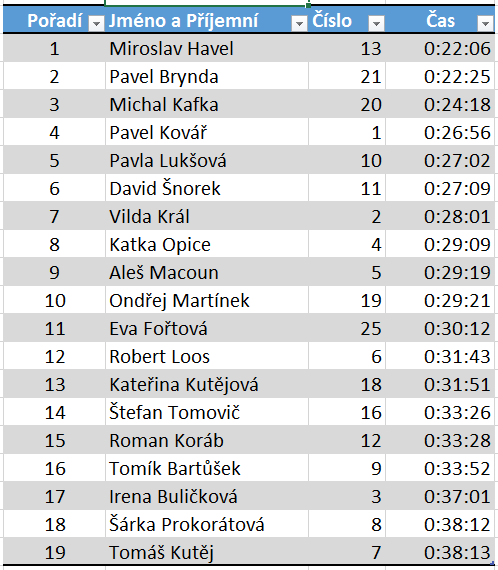

Mistrovství Čakoviček
v bramborovém salátu 2014
Popis
Myslíte si, že děláte nejlepší bramborový salát na světě? Přijďte se s námi
v adventním čase pobavit a zjistit, zda tomu tak skutečně je.
Pravidla
Každý účastník přinese 1kg bramborového salátu. Ostatní účastníci a diváci pak budou moci
jednotlivé saláty ochutnat a ohodnotit. Výsledek hodnocení bude vyhlášen ve 20:00.
Kdy a kde
23.12.2014 od 17:30 do cca 20:00
17:30 - registrace závodníků
18:00 - 19:30 - hodnocení registrovaných salátů
20:00 - vyhlášení vítěze
Cena
Vítěz získá medaili a první zápis svého jména na putovní salátovou místu!
Registrace
Prosíme registrujte se. Registrace je otevřená do 19.12.2014
Občerstvení
V průběhu akce budeme mít k dispozici svařené víno, nealko a pivo. K zajídání
bramborového salátu budeme mít miniřízky.
Budeme se těšit! :)
proběhl nultý ročník
Svatováclavské pětky
5km hobby běh
Neděle 28.9. start ve 13:00
Svatováclavská promenáda (ulice U Potoka směr ČOV)
Výsledková listina

Fotky
Michal Morávek - Start/Cíl
Korábovi - Start/Cíl
Aneta - Start/Cíl
Petr Znamenáček - Občerstvovací stanice
podpořte nás na Facebooku
|
|
|
|
© SPP Čakovičky 2014 |